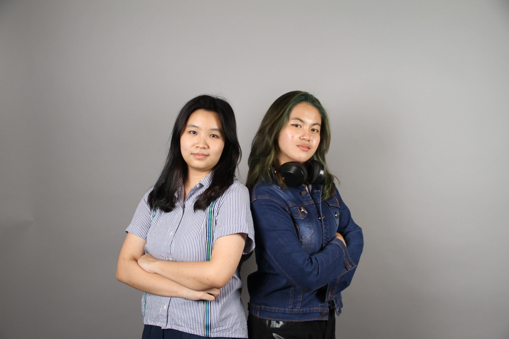
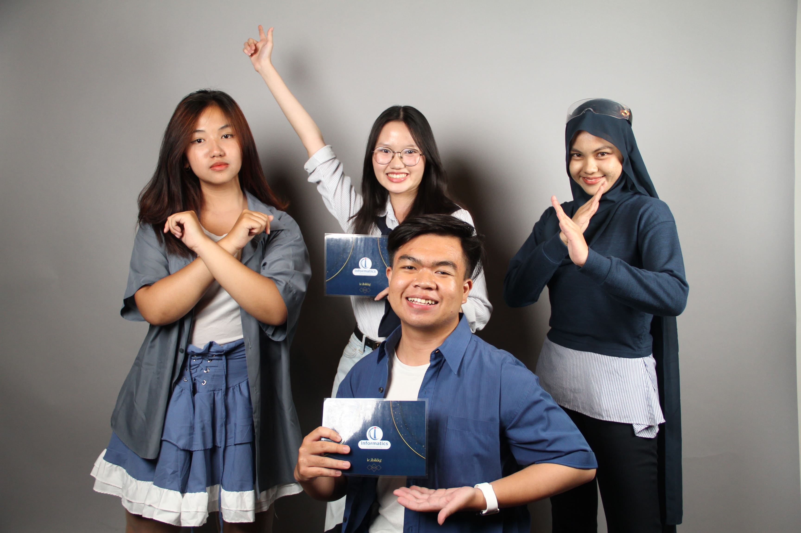
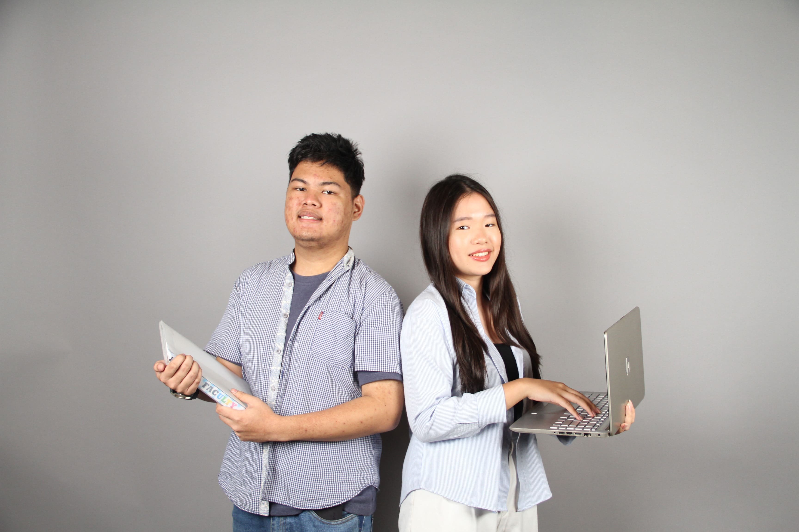
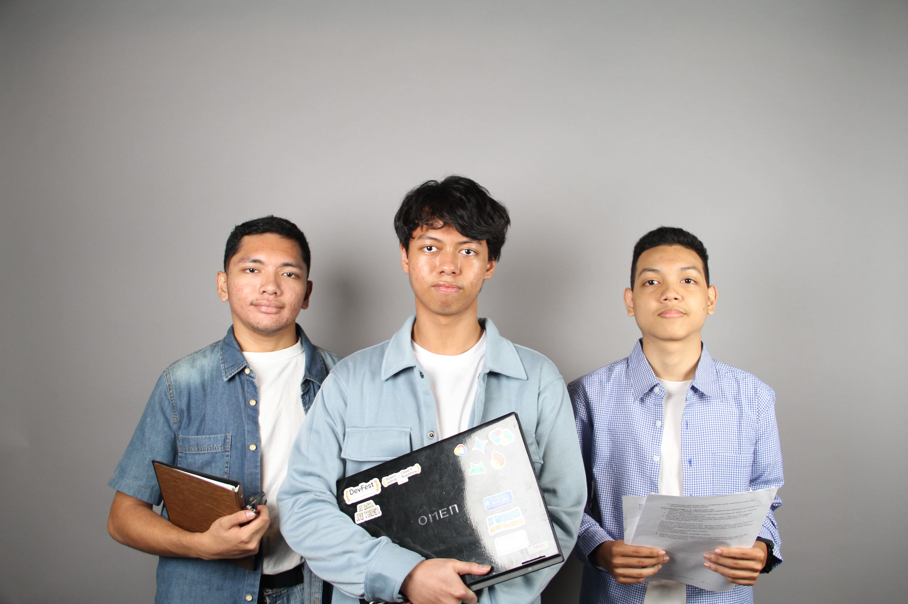
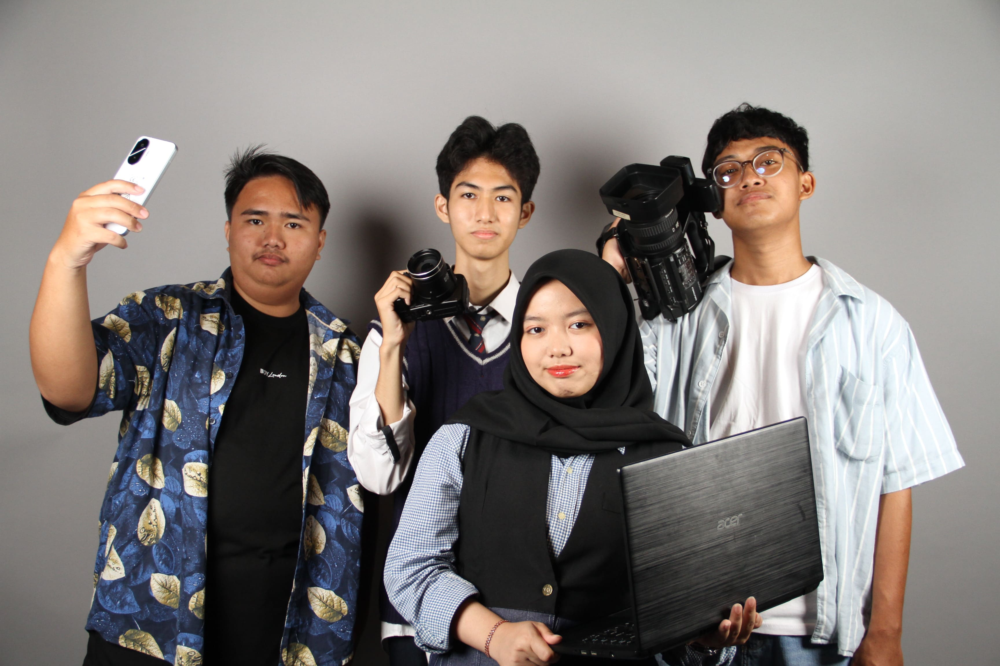
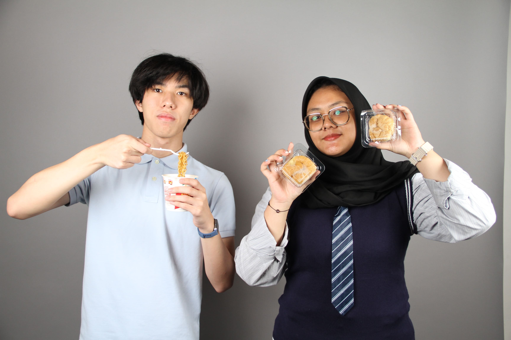
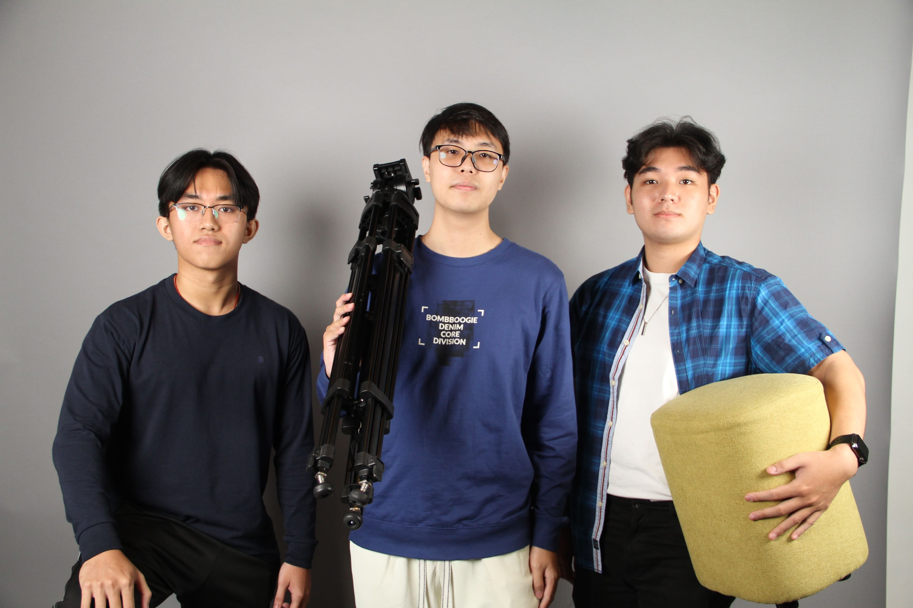

Kami hadir bukan hanya untuk berkumpul, tetapi untuk bertumbuh bersama. Menghubungkan gagasan, memperkuat kolaborasi, dan mengubah semangat menjadi karya yang berdampak nyata.
Mewujudkan HIMA Informatics Community sebagai organisasi yang aktif, inovatif, dan solutif dalam mengembangkan potensi mahasiswa serta memberikan kontribusi nyata di bidang teknologi dan masyarakat.
Menjadi wadah aspirasi dan pengembangan diri bagi mahasiswa Informatika dalam aspek akademik maupun non-akademik.
Mendorong peningkatan kompetensi anggota melalui pelatihan soft skill dan hard skill berbasis tren terkini di bidang teknologi.
Membangun kultur organisasi yang profesional, inklusif, dan kolaboratif baik internal maupun lintas organisasi.
Menciptakan program kerja yang memberikan dampak positif dan relevan dengan kebutuhan mahasiswa serta masyarakat sekitar.
Menjalin relasi strategis antara mahasiswa, dosen, alumni, dan pihak eksternal guna menciptakan ekosistem yang berdaya saing tinggi.
{
"nama": "Informatics Community",
"singkatan": "IC",
"kampus": "IBI Kwik Kian Gie",
"lokasi": "Jakarta, Indonesia",
"jurusan": [
"Teknik Informatika",
"Sistem Informasi"
],
"visi": "Unggul, Inovatif, Berdampak",
"berdiri": 2015,
"aktif": true,
"kontak": {
"email": "ic@kwikkiangie.ac.id",
"instagram": "@ic.ibikkg"
"linkedin": "Informatics Community"
}
}





